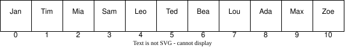
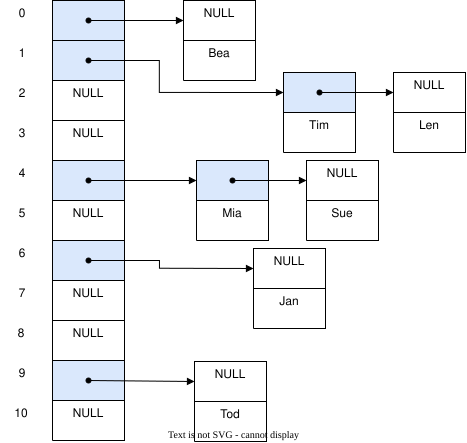

Tableaux de hachage¤
Les tableaux de hachage (Hash Table) sont une structure particulière dans laquelle une fonction dite de hachage est utilisée pour transformer les entrées en des indices d'un tableau.
L'objectif est de stocker des chaînes de caractères correspondant à des noms simples ici utilisés pour l'exemple. Une possible répartition serait la suivante :


Si l'on cherche l'indice correspondant à Ada, il convient de pouvoir calculer la valeur de l'indice correspondant à partir de la valeur de la chaîne de caractères. Pour calculer cet indice aussi appelé hash, il existe une infinité de méthodes. Dans cet exemple, considérons une méthode simple. Chaque lettre est identifiée par sa valeur ASCII et la somme de toutes les valeurs ASCII est calculée. Le modulo 10 est ensuite calculé sur cette somme pour obtenir une valeur entre 0 et 9. Ainsi nous avons les calculs suivants :
Nom Valeurs ASCII Somme Modulo 10
--- -------------- ----- ---------
Mia -> {77, 105, 97} -> 279 -> 4
Tim -> {84, 105, 109} -> 298 -> 1
Bea -> {66, 101, 97} -> 264 -> 0
Zoe -> {90, 111, 101} -> 302 -> 5
Jan -> {74, 97, 110} -> 281 -> 6
Ada -> {65, 100, 97} -> 262 -> 9
Leo -> {76, 101, 111} -> 288 -> 2
Sam -> {83, 97, 109} -> 289 -> 3
Lou -> {76, 111, 117} -> 304 -> 7
Max -> {77, 97, 120} -> 294 -> 8
Ted -> {84, 101, 100} -> 285 -> 10
Pour trouver l'indice de "Mia" il suffit donc d'appeler la fonction suivante :
L'assertion suivante est donc vraie :
Rechercher "Mia" et obtenir "Mia" n'est certainement pas l'exemple le plus utile. Néanmoins il est possible d'encoder plus qu'une chaîne de caractères et utiliser plutôt une structure de données :
struct Person {
char name[3 + 1 /* '\0' */];
struct {
int month;
int day;
int year;
} born;
enum {
JOB_ASTRONOMER,
JOB_INVENTOR,
JOB_ACTRESS,
JOB_LOGICIAN,
JOB_BIOLOGIST
} job;
char country_code; // For example 41 for Switzerland
};
Dans ce cas, le calcul du hash se ferait sur la première clé d'un élément en réutilisant la chaîne de caractères name :
L'accès à une personne à partir de la clé se résout donc en O(1) car il n'y a aucune itération ou recherche à effectuer.
Cette vidéo YouTube explique bien le fonctionnement des tableaux de hachage.
Collisions¤
Lorsque la fonction de hachage est mal choisie, un certain nombre de collisions peuvent apparaître. Si l'on souhaite par exemple ajouter les personnes suivantes :
On voit que les positions 4 et 1 sont déjà occupées par Mia et Tim.
Une stratégie de résolution s'appelle Open adressing. Parmi les possibilités de cette stratégie, le linear probing consiste à vérifier si la position du tableau est déjà occupée et en cas de collision, chercher la prochaine place disponible dans le tableau :
Person people[10] = {0}
// Add Mia
Person mia = {.name="Mia", .born={.day=1,.month=4,.year=1991}};
int hash = hash_person(&mia);
while (people[hash].name[0] != '\0') hash++;
people[hash] = mia;
Récupérer une valeur dans le tableau demande une comparaison supplémentaire :
char key[] = "Mia";
int hash = hash_str(key);
while (people[hash].name[0] != '\0' && strcmp(people[hash].name, key) != 0) hash++;
Person person = people[hash];
Lorsque le nombre de collisions est négligeable par rapport à la table de hachage, la recherche d'un élément est toujours en moyenne égale à \(O(1)\), mais lorsque le nombre de collisions est prépondérant, la complexité se rapproche de celle de la recherche linéaire \(O(n)\) et on perd tout avantage à cette structure de données.
Dans le cas extrême, pour garantir un accès unitaire pour tous les noms de trois lettres, il faudrait un tableau de hachage d'une taille \(26^3 = 17576\) personnes. L'empreinte mémoire peut être considérablement réduite en stockant non pas une structure struct Person mais plutôt l'adresse vers cette structure :
Dans ce cas exagéré, la fonction de hachage pourrait être la suivante :
int hash_name(char name[4]) {
int base = 26;
return
(name[0] - 'A') * 1 +
(name[1] - 'a') * 26 +
(name[2] - 'a') * 26 * 26;
}
Facteur de charge¤
Le facteur de charge d'une table de hachage est donné par la relation :
Plus ce facteur de charge est élevé, dans le cas du linear probing, moins bonnes seront les performances de la table de hachage.
Certains algorithmes permettent de redimensionner dynamiquement la table de hachage pour conserver un facteur de charge le plus faible possible. Quand le facteur de charge dépasse un certain seuil (souvent 0.7), la table de hachage est agrandie (souvent doublée comme pour un tableau dynamique) et les éléments sont re-hachés dans la nouvelle table.
Chaînage¤
Le chaînage ou chaining est une autre méthode pour mieux gérer les collisions. La table de hachage est couplée à une liste chaînée.


Adressage ouvert¤
L'adressage ouvert est une autre méthode pour gérer les collisions. Lorsqu'une collision est détectée, une autre position est calculée pour stocker l'élément.
Si une collision est détectée, on regardera la position suivante dans la table. Si elle est libre on l'utilise, sinon la suivante, jusqu'à trouver une position libre. Cette méthode est appelée linear probing.
Une autre méthode consiste à utiliser une fonction de hachage secondaire pour calculer la position suivante. Cette méthode est appelée double hashing.
Si la méthode est plus facile à implémenter, l'opération de suppression est plus complexe. En effet, il est souvent nécessaire de re-hacher les éléments pour maintenir la performance de la table de hachage.
Fonction de hachage¤
Nous avons vu plus haut une fonction de hachage calculant le modulo sur la somme des caractères ASCII d'une chaîne de caractères. Nous avons également vu que cette fonction de hachage est source de nombreuses collisions. Les chaînes "Rea" ou "Rae" auront les mêmes hash puisqu'ils contiennent les mêmes lettres. De même une fonction de hachage qui ne répartit pas bien les éléments dans la table de hachage sera mauvaise. On sait par exemple que les voyelles sont nombreuses dans les mots et qu'il n'y en a que six et que la probabilité que nos noms de trois lettres contiennent une voyelle en leur milieu est très élevée.
L'idée générale des fonctions de hachage est de répartir uniformément les clés sur les indices de la table de hachage. L'approche la plus courante est de mélanger les bits de notre clé dans un processus reproductible.
Une idée mauvaise et à ne pas retenir pourrait être d'utiliser le caractère pseudo-aléatoire de rand pour hacher nos noms :
#include <stdlib.h>
#include <stdio.h>
int hash(char *str, int mod) {
int h = 0;
while(*str != '\0') {
srand(h + *str++);
h = rand();
}
return h % mod;
}
int main() {
char *names[] = {
"Bea", "Tim", "Len", "Sam", "Ada", "Mia",
"Sue", "Zoe", "Rae", "Lou", "Max", "Tod"
};
for (int i = 0; i < sizeof(names) / sizeof(*names); i++)
printf("%s : %d\n", names[i], hash(names[i], 10));
}
Cette approche nous donne une assez bonne répartition :
$ ./a.out
Bea : 2
Tim : 3
Len : 0
Sam : 3
Ada : 4
Mia : 3
Sue : 6
Zoe : 5
Rae : 8
Lou : 0
Max : 3
Tod : 1
Dans la pratique, on utilisera volontiers des fonctions de hachage utilisées en cryptographies tels que MD5 ou SHA. Considérons par exemple la première partie du poème Chanson de Pierre Corneille :
$ cat chanson.txt
Si je perds bien des maîtresses,
J'en fais encor plus souvent,
Et mes voeux et mes promesses
Ne sont que feintes caresses,
Et mes voeux et mes promesses
Ne sont jamais que du vent.
$ md5sum chanson.txt
699bfc5c3fd42a06e99797bfa635f410 chanson.txt
Le hash de ce texte est exprimé en hexadécimal :
Converti en décimal il peut être réduit en utilisant le modulo.
Voici un exemple en C :
#include <stdlib.h>
#include <stdio.h>
#include <openssl/md5.h>
#include <string.h>
int hash(char* str, int mod) {
// Compute MD5
unsigned int output[4];
MD5_CTX md5;
MD5_Init(&md5);
MD5_Update(&md5, str, strlen(str));
MD5_Final((char*)output, &md5);
// 128-bits --> 32-bits
unsigned int h = 0;
for (int i = 0; i < sizeof(output)/sizeof(*output); i++) {
h ^= output[i];
}
// 32-bits --> mod
return h % mod;
}
int main() {
char *text[] = {
"La poule ou l'œuf?",
"Les pommes sont cuites!",
"Aussi lentement que possible",
"La poule ou l'œuf.",
"La poule ou l'œuf!",
"Aussi vite que nécessaire",
"Il ne faut pas lâcher la proie pour l’ombre.",
"Le mieux est l'ennemi du bien",
};
for (int i = 0; i < sizeof(text) / sizeof(*text); i++)
printf("% 2d. %s\n", hash(text[i], 10), text[i]);
}
$ gcc hash.c -lcrypto
$ ./a.out
1. La poule ou l'œuf?
2. Les pommes sont cuites!
3. Aussi lentement que possible
4. La poule ou l'œuf.
5. La poule ou l'œuf!
6. Aussi vite que nécessaire
8. Il ne faut pas lâcher la proie pour l’ombre.
9. Le mieux est l'ennemi du bien
On peut constater qu'ici les indices sont bien répartis et que la fonction de hachage choisie semble uniforme.
Fonction de hachage affine¤
Une autre méthode pour calculer le hash consiste à multiplier la valeur de chaque caractère par une constante et de sommer le tout. Par exemple, la fonction de hachage suivante :
int hash(char *str, int mod) {
const int a = 31;
int h = 0;
while(*str != '\0')
h = (h * a + *str++) % mod;
return h;
}
La constante a est souvent choisie comme un nombre premier pour éviter les collisions.
On peut également implémenter cette fonction pour hacher des entiers :
MurmurHash¤
Une autre fonction de hachage très populaire est MurmurHash. Elle est très rapide et produit des résultats de qualité. Voici un exemple en C :
uint32_t murmur3_32(const char *key, uint32_t len, uint32_t seed) {
uint32_t h = seed;
if (len > 3) {
const uint32_t *key_x4 = (const uint32_t *)key;
size_t i = len >> 2;
do {
uint32_t k = *key_x4++;
k *= 0xcc9e2d51;
k = (k << 15) | (k >> 17);
k *= 0x1b873593;
h ^= k;
h = (h << 13) | (h >> 19);
h = h * 5 + 0xe6546b64;
} while (--i);
key = (const char *)key_x4;
}
if (len & 3) {
size_t i = len & 3;
uint32_t k = 0;
key = &key[i - 1];
do {
k <<= 8;
k |= *key--;
} while (--i);
k *= 0xcc9e2d51;
k = (k << 15) | (k >> 17);
k *= 0x1b873593;
h ^= k;
}
h ^= len;
h ^= h >> 16;
h *= 0x85ebca6b;
h ^= h >> 13;
h *= 0xc2b2ae35;
h ^= h >> 16;
return h;
}
Les valeurs de seed et len sont des valeurs arbitraires. La valeur de seed est souvent choisie aléatoirement. La valeur de len est la longueur de la chaîne de caractères à hacher.
On observe égalements des valeurs arbitraires pour les constantes 0xcc9e2d51, 0x1b873593, 0xe6546b64, 0x85ebca6b... Ces valeurs ont été choisies pour leur qualité de mélange des bits. Elles sont souvent déterminées empiriquement.
Comparaison¤
Voici une compaison de différentes fonctions de hachage :
| Fonction de hachage | Qualité | Vitesse | Taille |
|---|---|---|---|
| MD5 | Bonne (cryptographie) | Lente | 128 bits |
| SHA-1 | Très bonne (cryptographie) | Lente | 160 bits |
| SHA-256 | Excellente (cryptographie) | Très lente | 256 bits |
| MurmurHash3 | Bonne (non cryptographique) | Très rapide | 32/128 bits |
| CityHash | Très bonne (non cryptographique) | Très rapide | 64/128 bits |
| FNV-1a | Bonne (non cryptographique) | Rapide | 32/64 bits |
| DJB2 | Acceptable (non cryptographique) | Très rapide | 32 bits |
| CRC32 | Bonne pour la détection d'erreurs | Très rapide | 32 bits |
Perte de l'ordre¤
Il est important de noter que les tableaux de hachage ne conservent pas l'ordre des éléments. Comme ils peuvent être insérés dans n'importe quelle position du tableau, il n'est pas possible de les parcourir dans l'ordre d'insertion.
Pire, selon l'algorithme utlisé, il est possible que si la fonction de hachage ou la taille de la table est modifiée en cours de route, les éléments soient déplacés dans le tableau, et donc que l'ordre de parcours change.
Python
En Python les tables de hachages sont des structures de base du langage appelées dict. Avant la version 3.7, l'ordre des éléments n'était pas conservé. Depuis la version 3.7, l'ordre d'insertion est conservé. Cela est dû à l'implémentation de la table de hachage qui utilise une seconde structure de données de type liste chaînée pour conserver l'ordre d'insertion. Cela a un impact sur la quantité de mémoire utilisée et la performance de la table de hachage car à chaque insertion il faut également mettre à jour la liste chaînée.
Complexité et implémentation¤
La caractéristique principale recherchée dans une table de hachage est de permettre un accès en temps constant \(O(1)\) pour les opérations de recherche.
La complexité de la recherche est en moyenne est donc de \(O(1)\), mais peut atteindre \(O(n)\) dans le pire des cas, par exemple si le facteur de charge est élevé et que la table de hachage est mal répartie. Il y a donc un compromis à trouver entre la mémoire utilisée et la performance de la table de hachage.